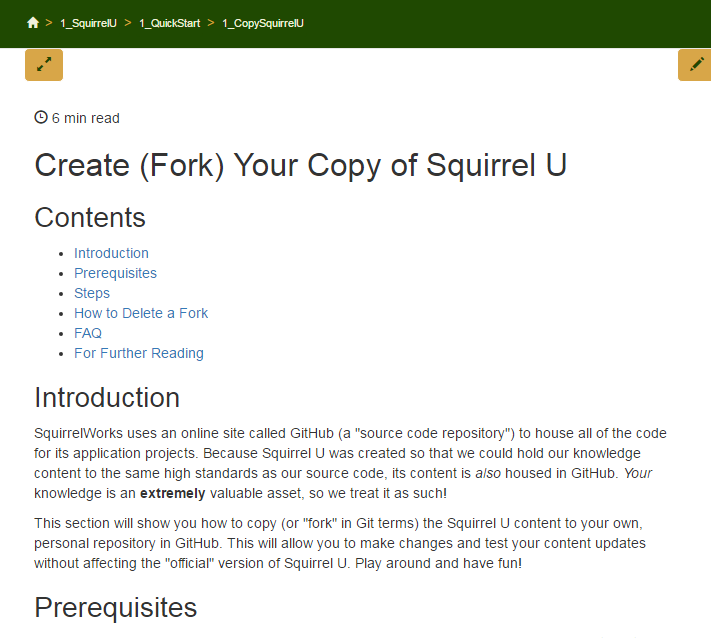
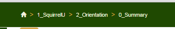
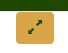
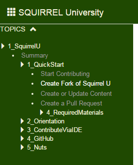

Contents
- Introduction
- Prerequisites
- Featured Courses
- Course Summary Page
- Content Page
- Convenience Features
- Hierarchy/Left Hand Nav
- Search
- For Further Reading
Introduction
Squirrel U was designed to help you explore new topics and quickly find the answers you need to get problems resolved quickly.
This section walks you through the various areas of the site and different ways to get where you want to go.
Prerequisites
- The only thing you need before you get started is access to GitHub.
Featured Courses
On the front page of Squirrel U, you will find a set of the more popular course section links. Course offerings will as new sections are offered.
You can always return to this page by clicking on the Home icon (looks like a house) in the breadcrumb trail.
Course Summary Page
After selecting a course, you will be taken to a summary page containing links to all of the content within that section.
Anytime you navigate to a new section or page, the content will be highlighted in the hierarchy to the left.
Content Page
Each content page follows a similar structure providing a brief introduction, any prerequisites, content and a list of "Further Reading" links at the bottom of the page.

Convenience Features
Let's take a closer look at some of the navigational and convenience features on each page.
Breadcrumb Trail

In some websites, breadcrumb trails are used to provide a set of previously visited links. Since a web browser provides adequate capability for doing this already, Squirrel U is using breadcrumb trails for a different purpose.
At the top of the page, a breadcrumb trail provides a quick navigation up and down the hierarchy. Clicking on any section to the left of the selected topic allows you to quickly return to an upper hierarchy level. The text displayed is based on the directory or file name to provide a consistent naming with the item in the GitHub file hierarchy.
Distraction Free Mode
 This icon toggles display of the left and right hierarchy and search sections.
Reading Time
Estimated reading time for a selected page of content.
An average non-technical reading rate is an average of 275 wpm. Squirrel U calculates a rough reading time using a technical rate of 100 wpm. This time may be adjusted based on actual usage over time.
Table of Contents
For each page, a Table of Contents is generated from all the of the headings specified in a page's Markdown (through the use of hashtags). The TOC provides context as to whether the page contains relevant material per your search. It also serves as a quick navigation option for larger pages as each section is a direct link to that content.
Page Sequence Navigation
When you scroll downwards a number of lines in a page, a set of buttons will appear near the bottom of the page.
If there is prior content in a sequence of content, a "previous" nav button containing the content title will appear on the left side of the page.
The center button will take you back to the top of the page.
If there is succeeding content, a "next" nav button containing the content title will appear on the right side of the page.
Hierarchy/Left Hand Nav
At the heart of Squirrel U is the content hierarchy, where all content has been arranged in a (hopefully) logical taxonomy of material. This hierarchy reflects the structure of directories in the Squirrel U repository.
This hierarchy appears in the left panel of your browser (if you're not in distraction-free mode).

You can expand and collapse the whole hierarchy by clicking on the caret button at the top of the hierarchy. Individual sub-sections can be toggled opened and closed. Currently, the site is set to expand only the section that you have selected and close all other sections which you are not viewing.
When you select a topic from the breadcrumb trail, search or use an internal link, the topics's section will be opened and the topics will be highlighted.
Search

Search provides a very fast keyword based search capability based on Page Title, Author, Tags (keywords) and a 20 word excerpt of the page. Therefore it is critical to pay close attention to the values placed into these fields, which are largely managed in a content page's "Front Matter". Too many general tags will result in too many results for a given search. Too little will leave the content unfound.
Specify additional keywords in search to further refine the results. Click a result to open the page for review.
For Further Reading
- Need to know more about "Front Matter", which plays a huge part in the features outlined above? Take a look at our Front Matter Overview page